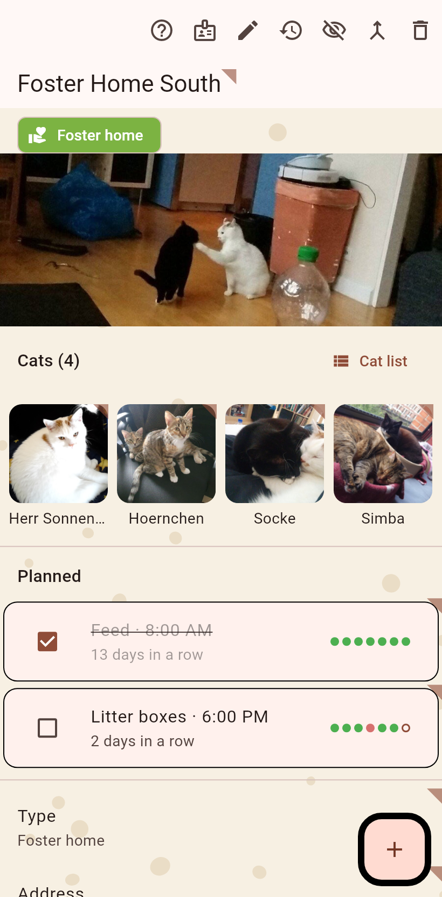

Everything about one place: its cats, its fields (address, contact, type), what is planned there and its history.

The cats living here with their faces, then the plans, then the fields. The page opens read-only; the pen in the bar turns on editing, where a new field is added too. A hold on a field edits it straight away; a hold on a cat moves, hides or opens it. The clock on a field opens its history.
An appointment added here can take several cats along, a neutering run for example: tick the cats that come, finish once, untick the ones that were not treated. They stay planned.
Help, the card, the pen, the timeline, then what fits: hide, merge into, move to another catalog, delete. The title wears the cat ear: a hold renames the clowder.